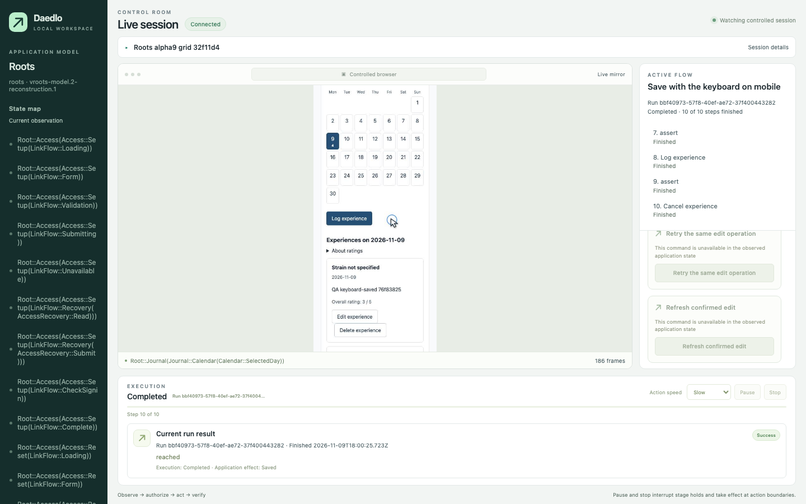
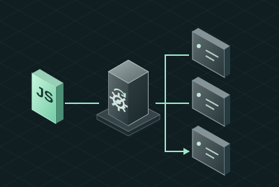

Model a user flow in Rust, run it locally with Playwright, and inspect the evidence that an action worked, down to whether a save actually persisted.
I design backend systems and APIs for healthcare and worker benefits at Workers Benefit Fund. Outside work, I build open-source tools for testing APIs, debugging browser requests, and tracing services at runtime. I also build interactive lessons that help developers see how software works under the hood.

Model a user flow in Rust, run it locally with Playwright, and inspect the evidence that an action worked, down to whether a save actually persisted.

Step through interactive 3D lessons to see how the Node.js event loop handles callbacks or how Rust’s Tokio runtime schedules tasks.
Give an HTTP client slow responses, dropped connections, or two 503s followed by a 200 to see how its timeouts and retries behave.
Check HTTP endpoints from the command line and measure latency and throughput under concurrent load.
Pause an outgoing API request in a Chrome tab, inspect or edit its headers and body, then let it continue.
Capture Linux system calls from a Rust service running in Docker, then replay the trace to inspect file opens and connection attempts.